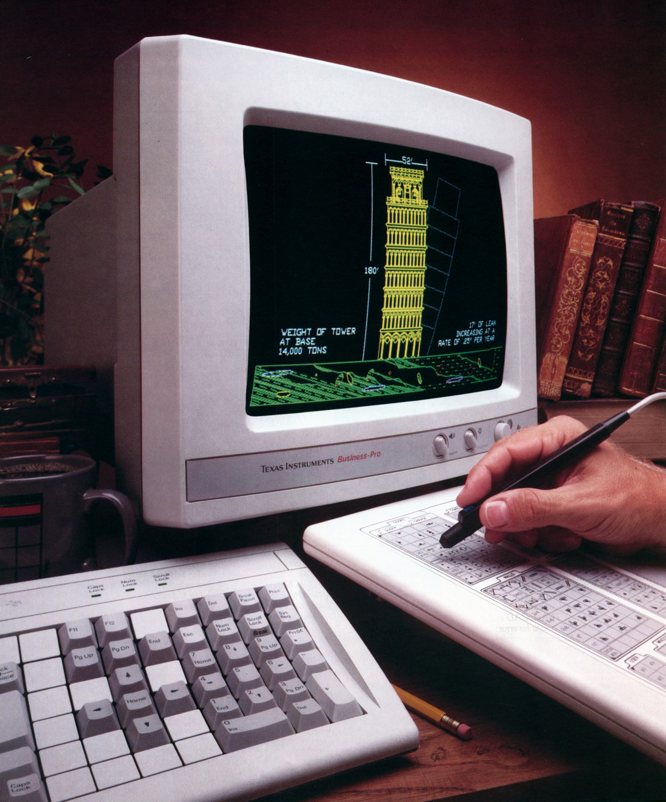
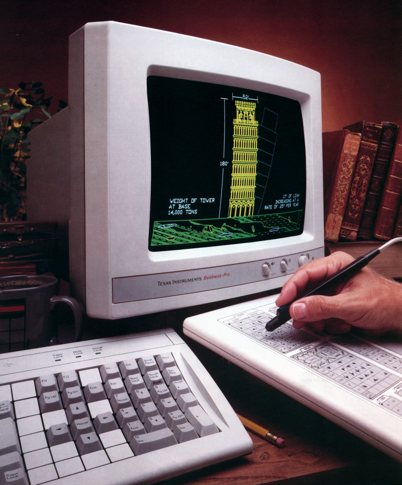

Advertisements for Architecture 0346
Texas Instruments TI Business-Pro Computer with AutoCAD (1986)

Advertisements for Architecture 0346
Texas Instruments TI Business-Pro Computer with AutoCAD (1986)


Windows 95 - Internet Properties
LEGO Racers